|
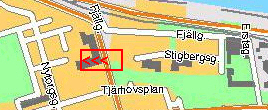 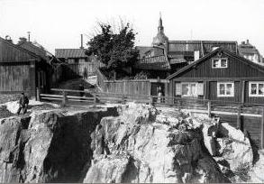 Stigbergsgatan 13. Stigbergsgatan västerut vid Renstiernas gata. I skärningen ser man Renstiernas gata. I bakgrunden Katarina kyrka. Bilden tagen 1900.
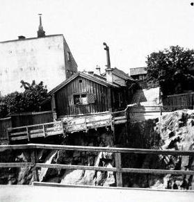 Stigbergsgatan 18 (Tidigare Katarina Östra Kvarngränd) Kv Sandbacken Mindre. Katarina Östra Kvarngränd klövs i två delar, när Renstiernas Gatan sprängdes fram. Nytt namn på gränden är Stigbergsgatan.
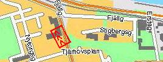 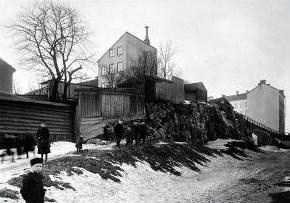 Stigbergsgatan 18; Renstiernas Gata 12 (Kv Mäster Mikael)
|
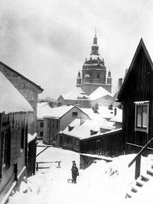 Stigbergsgatan 3-7, 1890. Till höger närmast nr 7, i bakgrunden 3-5
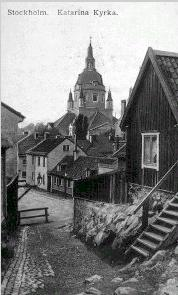 Stigbergsgatan 3-7 västerut. Till höger närmast nr 7, i bakgrunden nr 3-5. Trycksak 1896.
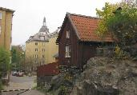
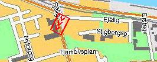 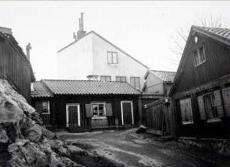 Renstiernas Gatan 10; Stigbergsgatan 18 (Kv Sandbacken Mindre) Till höger Renstiernas Gata 10, i fonden Stigbergsgatan 18. 1895
|
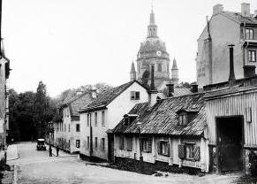 Stigbergsgatan 1-3; Nytorgsgatan 12, 13 (Kv MästerMikael). Stigbergsgatan västerut. Närmast till höger nr 3 (Kv Mäster Mikael), där bortom nr 1 (Kv Katarina Större). Mellan husen Nytorgsgatan. 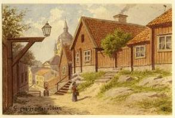 Stigbergsgatan 7 (Kv Mäster Mikael) (Fredrik Isberg, akvarell, 1900)
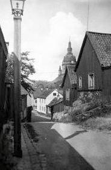 Stigbergsgatan 7-3 (Kv Mäster Mikael) 1896
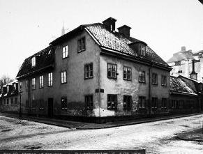 Stigbergsgatan 1. Korsningen med Nygatan. Bilden från öster. |